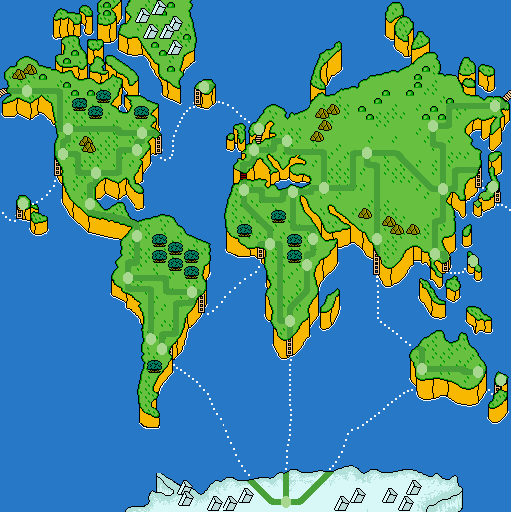
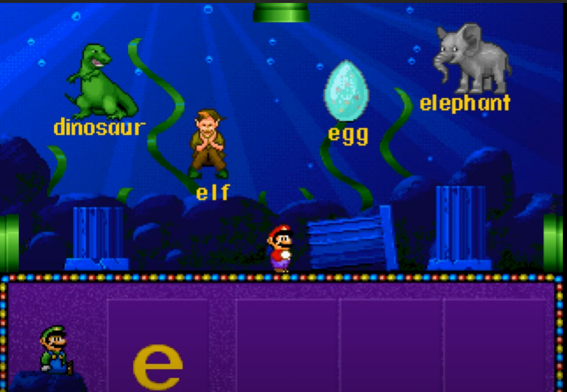

While some of the games listed below may be familiar to Mario fans, they might not know that they were collectively part of a "Mario Discovery" series. As the title suggests, these are educational games, sorta riding the wave that was popular in the 90s. At no real surprise, they are developed by another company, 'The Software Toolworks' and only licensed by Nintendo. Off the bat we know these aren't going to be your average Mario game. Read on as we delve into some truly odd games!
Note: Mario Teaches Typing 1,2 and Mario's FUNdamentals are NOT part of this series.

The infamous 1993 game where Luigi takes center stage on the NES, SNES, PC, and later Mac. Also a great place to start, about the pinnacle of the series. The theme here and for the others is that they take place in the real world to educate you about 'real' facts. That also means that we have a plot where Bowser attempts to flood our planet EARTH. It gets more deranged! He needs a ton of hairdryers to do it and to afford such, he's sending his minions all over the world via "P.O.R.T.A.L.S." to steal landmarks they can sell off for cash. Let's stop here for a moment, to whom are they selling these landmarks? Art theft is a thing, but we're talking world famous objects that are heavily publicized and near impossible to snatch in the first place. Second, the SNES manual states that Bowser had a castle in Antarctica, so why does he want that melted away? Why can't he directly steal the hairdryers? Wouldn't less people care about those going missing? How do you power so many hairdryers in Antarctica??
*Breathes* Okay, Mario games are known for 'excuse plots', but this one is quite a headscratcher, and not in the educational way they intended. Let's move on..
Mario and co follow Bowser to stop him and while details vary between versions, the end result will be Mario getting captured, which leaves it to Luigi to save the day. Interesting notes is that Brooklyn is mentioned in the manual (here), so the game makers were influenced by the cartoons and/or the general accepted pre-Yoshi's Island origin of the Mario bros. They also predated Luigi's Mansion with a trick like that. Let's give some credit where it's due. There's no reason why they had to conjure up a Luigi solo mission plot, so they simply thought it might be interesting, proving that there was some real effort at first. Did that apply to game play?
Left: We zoomed way out on Google Maps just for you!
This is a ‘side-walk-scroller’, get it? You traverse the streets and look both ways before crossing (to set a good example for the kids), all on the hunt for Koopa Troopas with stolen artifacts and maybe helpful maybe not clues on where they belong. That's the "educational" bit, knowing where the artifacts go in the real world. There are curators hanging around to quiz you on if you know what you are doing, and if so accept the items. Luigi uses a 'Globulator' to call Yoshi once he knows where he is and to get out of the level, or the exit will be blocked. Yes, it's a mystery where you are in the world and you can't directly ask someone like any tourist would normally. Once you have sleuthed it up from cryptic hints, then you secure the cities, espcape with the help of Yoshi, and move on through Bowser's castle, occasionally fighting Koopalings that may or may not have voice actors depending on version. There is a password system to save some progress.
Already you can see some oddities here? Because this game, unlike Mario's Time Machine (see below) is specifically grounded, they had to make some odd and contrived choices to make this game work. I still think it's different and fascinating, but only to a die-hard. Below are some additional takes of mine:

Out of this world!
To me, this is the sister game of the above, their last effort to kinda pretend to be creating a game an average child might want to play. Does it work better this go around? Well for starts, they did not xerox the same game over various ports, we get a semi-tailored experience!
DOS and SNES version: (Manual here) Bowser is stealing valuable items again, only now he's messing with history via a ‘Timulator’. Bowser wants it partly for a fancy personal museum in his castle, but also screw with time itself. Mario has to get in the castle to return the items to their proper place. Notably Mario has narration and the music isn’t half bad. Buuuuut..
Left: At least this time he's not auctioning this stuff on ebay..
Okay, great. How do we save the world this time? For starts, there's no side walking. You go to the museum there Bowser has already successfully taken items. You pick one, a location that it goes to, and a time that it belongs to. I feel this is asking quite a lot if you are just jumping in.. You are next sent to a 3D surfing mini-game called the 'Fabric of Time' where you need to pick up mushrooms and then hit a whirlpool. NOW you are in whatever historical place you need to be and like before you must be quizzed successfully before you can return items. Like in Mario is Missing, you need to walk around and learn stuff, except even more comically with the historic settings. You can come back home using a device that seems like a huge mecha of Mario’s hand. Despite what you are thinking it doesn't do anything else interesting. The DOS game has multiple endings depending on how fast you complete your task and if you returned the items correctly. 'Paradise' is Bowser getting away. The next is where the player makes a mistake. The third is quite brutal as Bowser gets squashed by a dinosaur Jurassic Park style. Ouch. The SNES version has less locations to worry about.
NES: (Manual here) The game is redesigned for the hardware. Mario and Yoshi stumble upon the Bowser Museum this time. Yoshi decides to waltz inside and gets kidnapped, a plot point nonexistent in the other versions. A couple of things are simplified. To time travel you play a brief Mario Bros inspired game to get an item then jump into a pipe. Certainly feels a bit more like ‘Mario’ doesn’t it? The time periods are already predetermined so you don't enter them manually. You don’t have to do the npc detective work either to return stuff, rather read message blocks that describe the location. You will of course have to guess correctly where you are still. At the cost of potentially educational busy work, I actually like this a bit better. The visuals are alright for the system it’s on, but once again combat is prohibited as the enemies can’t hurt you.
So in summary: Like I compared briefly in the Mario is Missing section above, we can more easily ignore absurdities here because while we are still dealing with real facts, we have thrown wacky time travel into the mix. It's a rather obvious but workable way to 'magically' jump you wherever and teach kids stuff. The different ports doing something to more accommodate the system is also a point of interest. Overall however, this game makes the cardinal mistake of taking the Mario out of Mario. With Mario in these real life locations it’s just not that interesting and interrogating NPCs is not a mechanic that remains fresh enough to base a game around. I will say that the score system does something this time and is in fact tied to the ending you get. The password system also returns so you can jump around if you wish.
 |
We won't go deep into the next ones because, well, one scoop and- looks like we hit bedrock! Mario's Early Years! Fun with Letters is purely for very small kids as indicated in the title. There is a PC and SNES version with some slight changes. Both teach basic English and are controlled by clicking around a cursor. Mario and Peach and Yoshi are playable characters, but you don’t really ‘play them’ because again you’re mostly clicking around to pick the right answers. The graphics are waaaaay off model in both versions. There lots voice acting however, so imagine the fun there. It’s worth a Youtube watch for sure. |

Be careful how you answer that one! Also, Luigi is using Super Mario 64 moves three years early! |
|---|---|---|
 |
For PC and SNES this game focuses on numbers but also comparisons and geometry. Again we have the same type of voice acting and point and click gameplay. The locations feel a little more Mario with some Super Mario World backdrops depending on minigame but overall are similar to the above. The SNES version lacks the Sing Song World but this is a favor trust me! Again, check it out on Youtube and that’s it. |

That part of Isle Delfino no one talks about |
|---|

|
For the image we zoomed way out because.. actually this small image is all I could find.. The series ends with... a bang cause we're gonna teach ya everything now! This is a sort of free for all game for small kids. You count objects, identify body parts (yes), find opposites, match sounds to animals, match whatever to whatever. You get it. Last is the Sing Song World again left out of the SNES version. Aesthetics are entirely the same deal. In Counting World Peach teaches a class room apparently. | 
Yikes! |
|---|
Cheap and juxtaposed is the name of the game here. Remember this is the 90s. If you dig around on this site you might see me as a concerned fan moaning about a number of little things regarding Mario, but you know what? It'll rarely if ever be about the old stuff. See, just about every Mario game that existed was good and the height of gaming for this period. Then comes along games not made by Nintendo that try to combine real world elements with a near surface level (especially later) Mario skin, while hardly if ever incorporating any of the things Mario is known for. Quite a hard sell, right?
Now keep in mind I judge and evaluate Mario is Missing and Mario's Time Machine as 'game games' while the others are strictly in the pre-K market and about typical for that sort of specialized genre. As I'm not an edutainment person, let's focus on the first two. Mario is Missing is a novelty first and far most, secondly something to have fun and laugh at or with for a while. Is it that fun? Not really, but not the worst either. The second game was trying to be a bit zanier and I do like that, but for some reason it feels like more work, which is the point, but in a dull way. You could take out Mario elements easily for instance which would be more difficult in Mario is Missing. You interact a lot with a simple notebook instead of the curators/booth too. Unless you are a strict history nerd it's a bit rough to recommend. Now, that being said, for a Mario fanatic, you're obligated to check everything out at least once. Come on! They won't bite!
..Mostly.. I don't like the looks of them..
*Updated 5/9/22*